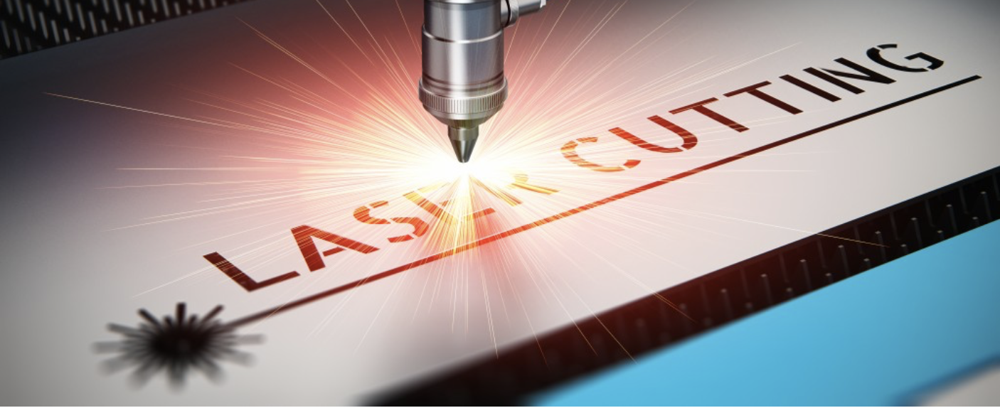

Tölvustuddur skurður
Undirbúningur
Til þess að undirbúa mig fyrir verkefnið byrjaði ég á því að horfa á kennslu myndböndin sem kennari áfangans gaf út fyrir verkefnið, eftir að hafa horft á þau ákvað ég að prófa mig aðeins áfram í forritinu Fusion 360 til þess að reyna að læra aðeins inn á það. Eftir að vera kominn með ágætis skilning á forritinu fór ég í hugmyndaleit, ég notaði internetið til þess að skoða mismunandi hugmyndir fyrir það sem mér langaði að gera.
Ég ákvað að gera vínflöskustand fyrir 4 - 8 flöskur, ég teiknaði upp standinn fyrir fjórar flöskur en þegar að teikningin var tilbúin var ég ekki nægilega sáttur með útkomuna og ákvað ég því að byrja upp á nýtt (hægt er að sjá það ferli neðst á síðunni í kaflanum "framkvæmd - vínflöskustandur" fyrir áhugasama). Nú þurfti ég að finna aðra hugmynd og var ég búinn að hugsa það í dag góðan tíma en það var ekki fyrr en að ég ætlaði í playstation og fann ekki fjarstýringarnar mínar, þá datt mér í hug að búa til stand fyrir fjarstýringarnar mínar. Myndirnar hér að neðan sýnir niðurstöður verkefnisins og ættu þær að auðvelda lesanda að sjá fyrir hvaða hugsanir fara í gegnum hvaða skref.
Teikning
Mælingar
Til þess að geta byrjað að teikna standinn er undirstöðuatriði að vita hvernig stærðin á PlayStation fjarstýringunni er. Ég mældi bilið á milli "handfanganna" sem var 75 mm og hæðina sem var 30 mm. Erfitt er að útskýra hvað ég var nákvæmlega að mæla þannig að hér að neðan er mynd af fjarstýringunni.
Parametrar
Ég byrjaði á því að setja upp parametra til þess að geta auðveldlega breytt stærðinni ef eitthvað myndi fara úrskeiðis. Við gerð parametrana notaðist ég mikið við myndbandið sem kennari áfangans setti inn á Canvas síðu áfangans fyrir verkefnið. Eins og sést á myndinni af parametrunum þá eru þeir hugsaðir þannig að ef til dæmis skyldi koma fyrir að það vantaði meiri stöðuleika á standinn þá væri hægt að stækka grunnflötin auðveldlega með því að breyta parametrunum "botn_L" og/eða "botn_b". Einnig fannst mér mikilvægt að það væri hægt að breyta stærðinni á standinum sjálfum, þar að segja með því að breyta parametrunum "standur_H" og "standur_B". Ástæða þess að ég vildi gera það auðvelt var vegna þess að ekki eiga allir sama "console" og vildi ég að mín hönnun væri þannig byggð að hægt væri að grugga í henni til þess að höfða til allra.
Botn
Til þess að byrja teikninguna teiknaði ég "sketch" fyrir botninn með "3 point Rectangle" þar sem ég notaði parametrana fyrir stærðina. Síðan notaði ég "Extrude" til þess að búa til fyrsta "body"-ið. Myndin hér að neðan sýnir botninn eins og hann er í lokinn, á myndinni sjást hök í "body"-inu sem ég útskýri hér aðeins að neðan hvernig ég gerði.
Hliðar
Hliðarnar "sketch"-aði ég á y-ásinn, ég notaðist bæði við línur og hringi til þess að "sketch"-a inn mjúkar beygðar línur. Þegar að ég var búinn að sketch upp þær útlínur sem ég vildi hafa og nota "cut" til þess að taka út óþarfa línur. Nú þegar að hliðar "sketch"-inn var tilbúinn notaði ég eins og áður "extrude" til þess að búa til body, ég notaði parameterinn þykkt í allar extrude aðgerðir. Síðan þegar að hliðin var alveg tilbúin notaði ég notaði ég tólið move/copy sem er að finna í "modify" og afritaði "body"-ið sem nýtt "body" með því að gera þetta þannig þá fæ ég alveg 100% eins hlut.
Eins og sést á "sketch"-inum eru tveir fingur neðan á "body"-inu sem fara ofan í botninn. Ég staðsetti báðar hliðarnar á botninum með parametrum og notaði "combine" til þess að búa til götin í botninn fyrir hliðarnar, þegar að þetta skref er tekið er mikilvægt að hafa "operation" í "cut" og að hafa hakað við "keep tools". Hægt er að sjá þetta myndrænt á myndinni hér að neðan.
Styrktarbitar
Styrktarbitana gerði ég rétt eins og ég gerði hliðarnar, ég byrjaði á því að búa til "sketch" þar sem ég passaði upp á að þær lengdir sem settar voru inn voru linkaðar með parametrum. Einnig notaðist ég aftur við "copy/move" þar sem að ég vildi hafa þrjá svo að standurinn myndi haldast stöðugur.
Aftur notaði ég rétt eins og í hliðunum "combine" til þess að fingurnir séu staðsettir nákvæmlega eins og þeir áttu að vera.
Standurinn
Þegar hingað er komið er hluturinn full teiknaður og í þetta skipti var ég sáttur með útkomuna.
Útskurðurinn
Til þess að geta sett teikninguna inn í laser skurðarvélina þarf að setja teikninguna upp í Inkskape . Ég bjó til body í Fusion 360 sem er í sömustærð og platan sem ég ætlaði mér að skera í, tók svo þau "body" sem ég þurfti að skera út og notaði "move/copy" og staðsetti nýtt body rétt fyrir ofan plötuna og "extrude"-aði í gegnum plötuna svo úr varð gat í gegn. Þegar búið var að taka alla íhlutina og "extruda" í gegn lýtur platan svona út.
Á þessu stigi þá þarf að fara að hugsa um kerf (Hægt er að sjá hvernig við fundum kerf í kaflanum "Kerf" hér að neðan), hópurinn minn var búinn að skoða kerf og fengum við út að kerf væri 0,16. Til þess að gera ráð fyrir kerf-inu notaði ég "offset" og "offset"-aði um hálft kerf, inn og út eftir því hvað átti við.
Þegar hingað er komið valdi ég alla plötuna og setti hana upp sem "sketch" og "save"-aði hann sem pdf til þess að geta "import"-að inn í Inkskape.
Til þess að stilla Inkskape notaðist ég við myndband sem kennari setti fram sem kennslu ítarefni. Eftir að hafa stillt Inkskape færði ég verkefnið yfir á usb-kubb til þess að geta sett verkefnið í tölvuna sem tengist skurðarvélinni. Að lokum setti ég plötu í vélina stilti núll púnkt og setti hana af stað.
Samsetning - Niðurstöður
Eftir öll ofangreind skref var ég kominn með alla í hlutina fyrir standinn, því er það eina sem eftir var að setja hann saman. Eins og sést á myndunum heppnaðist hluturinn vel og auðvelt er að setja fjarstýringarnar á standinn, einnig er auðvelt aðgengi að aftanverðu til þess að setja þær í samband.
Hönnunarskjöl
Inn á þessum link er að finna hönnunarskjöl fyrir bæði vinflöskustandinn sem sjá má hér að neðan og hönnunarskjölin fyrir PlayStation fjarstýringastandinn hér að ofan.
Kerf
Þegar notast er við tölvustuddan skurð (sem og annars konar skurð) og ætlunin er að hluturinn sé "press fit" er mikilvægt að reikna með kerf, kerf er þykkt laser-sins í þessu tilviki. Fyrir áhugasama þá er síðan síðan sem ég notaði til að kynna mér kerf áður en ég byrjaði.
Til þess að finna kerf fór ég ásamt hóp meðlimum mínum þeim Oliver Aron Jóhannessyni (síðan hans) og Björgvin Þór Kolbeinsyni (síðan hans ) í fablab þar sem við teiknuðum 100x10mm ferhyrning sem samanstóð af 10 öðrum ferhyrningum inn í. Þessa teikningu sendum við í laser skurðarvélina, eftir að skurðarvélin var búin að skera út og við búnir að taka allt úr henni settum við alla bitana í stóra ferhyrninginn eins og sést á myndinni hér að neðan.
Eins og myndin gefur til kynna þá er bil milli kassana eftir að búið var að taka einn ferhyrning úr, var bilið 12,08mm. Næst eftir þetta tókum við þann litla ferhyrning sem við tókum út og mældum hann, við notuðumst við skífumál til þess að mælingarnar hjá okkur væru eins nákvæmar og unnt var, kassinn var mældur 9,8mm. Þó svo að við skárum bara út 10 kassa þá er mikilvægt að hafa í huga að skurðirnir sem gerðir voru voru 11 þannig að til þess að finna kerf notuðum við jöfnuna (12,08-9,8)/11=0,0207. Sem er kerf laser skurðarnis.
Framkvæmd - Vínflöskustandur
Ég byrjaði á því að setja upp parametra án þess að hugsa mikið um stærðina, því ef þeir eru settir rétt upp þá er lítið mál að breyta stærð teikningarinnar.
Í gerð parametrana notaðist ég mikið við myndbandið sem kennarinn gaf út fyrir „fingers“, í því myndbandi er einmitt farið vel yfir það hvernig hægt er að setja upp fingur sem notaðir eru til þess að smella hlutnum saman.
Til þess að byrja teikninguna sjálfa ákvað ég að líklegast væri best að byrja á botninum, ég bjó hann til með þriggja punkta ferhyrning þar sem lengdin og breyddinn voru tengdir parametrunum. Fingurna setti ég upp alveg eins og myndbandið sýnir, ég teiknaði þá bara upp öðru megin þar sem að auðvelt er að setja þá líka á hinum megin þegar að ég er búinn að teikna hliðina. (Myndin sýnir hinsvegar botninn þegar hann er alveg tilbúinn)
Því næst voru vinstri og hægri hliðin, ég gerði aðra hliðina rétt eins og ég gerði botninn, notaði svo „combine“ sem er að finna í „modify“ til þess að láta fingurnar passa við. Þegar að fingurnir voru komnir á botninn teiknaði ég upp fingurnar á fremri hliðinni eins og ég gerði þá á botninum nema ég notaði lengdina og fjöldann á hæðinni. (Myndin sýnir hliðina þegar hún er alveg tilbúin)
Aftasti parturinn var mjög einfaldur í teikningu þar sem að ég var búinn að búa til fingur á bæði botninn og hliðarnar og því þurfti ég einungis að búa til ferhyrning með þeim parametrum sem ég var búinn að gera og nota svo „combine“ til þess að setja fingurnar á réttann stað.
Þegar hingað er komið í teikni ferlinu er kominn grindinn utan um og því var næsta mál á dagskrá að setja inn „hólf“ fyrir flöskurnar fjórar sem ég vildi hafa innan kassans. Þegar ég var að teikna þær passaði ég mig vel á að nota parametra í öllum þáttum „sketch“-ins til þess að hægt væri að breyta stærðinni að teikningu lokinni. Hólfin gerði ég með hringjum þar sem að radíus þeirra var settur inn sem parametrum til þess að halda í við þá sýn hjá mér að auðvelt væri að breyta stærðum, ekki bara stærð boxins heldur einni hólfunum fyrir flöskurnar þar sem að ekki allar flöskur eru jafn stórar.
Hér að ofan má sjá sketchin fyrir framhlutann, ég notaði parametrana til þess að staðsetja hringina svo að þegar ég breyti stærðinni þá breytist staðsetninginn samkvæmt því. Til dæmis til þess að staðsetja hringina bjó ég til línu sem er (breydd/4) fyrir miðjuna á öðrum hringnum og hinn hringurinn er staðsetur (breydd/4)*3. Hólfin fyrir aftan eru aðeins stærri og til þess að halda betur utan um flöskurnar var ég með alveg eins sketch nema að radíusinn fyrir hringina þar er stærri. Hér að neðan má sjá myndir af báðum týpunum.
Þegar hingað er komið er búið að teikna hlutinn eins og hann á að vera og lítur hann út eins og á myndinni hér að neðan.